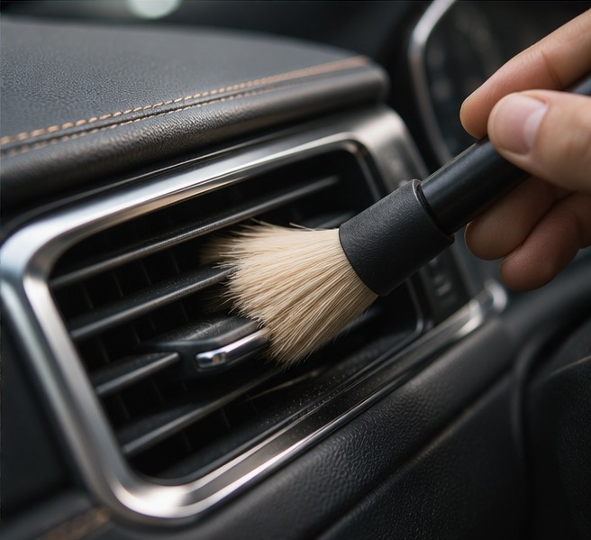

İVSU GRUP
Hizmet galerisi
Su arıtma ve araç yıkamade kullanılan ekipman, yüzey ve bakım detaylarından temsili görseller.
Su Arıtma Sistemleri
Hizmet sayfası


Araç Yıkama
Hizmet sayfası




İVSU GRUP
Su arıtma ve araç yıkamade kullanılan ekipman, yüzey ve bakım detaylarından temsili görseller.
